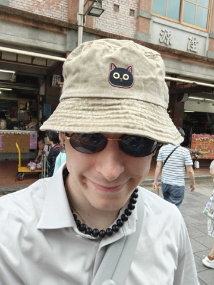

About

Imaging is no longer just about prettier pictures. Phones, robots, drones, and wearables must capture reliable visual evidence under tight hardware limits—and expose images that people and AI systems can actually use.
Yet neural ISPs and generative imaging models are often hard to steer. A noisy RAW frame, a lens aberration, or a poorly controlled enhancement can break not only image quality, but recognition, planning, and action. The camera pipeline is now part of the intelligence stack.
This half-day ACCV tutorial connects neural ISPs, controllable generative models, cameras, and active perception into a practical course. Leave with a clear map of the field—and concrete recipes for imaging that is beautiful, steerable, and useful for VLM/VLA systems.
Updated 2nd edition of the ICCV 2025 tutorial A Tour Through AI-powered Photography and Imaging (100+ in-person attendees).
What You Will Learn
Five practical questions guide the course:
- What should a camera expose to AI? — RAW, metadata, bursts, uncertainty
- How do neural ISPs work in practice? — restoration, rendering, deployment
- How to co-design optics and AI? — aberrations, compact cameras, sensors
- How do imaging models become controllable? — language, intent, smart cameras
- How should we evaluate imaging? — perception, latency, energy, failures
- How to close the loop? — sense, process, verify, refine with agents
Tentative Schedule
15 December 2026 · Half-day · Morning · times local to Osaka.
Tutorial topics are still being finalized. A tentative schedule is provided below.
| 09:00 – 09:10 | Welcome: from neural ISPs to controllable imaging models |
| 09:10 – 09:45 | RAW sensing, metadata, bursts, camera failure modes — why RGB is not enough |
| 09:45 – 10:20 | Neural ISPs: restoration, rendering, controllability, and deployment |
| 10:20 – 10:30 | Short break |
| 10:30 – 11:05 | AI + optics: compact cameras, aberrations, and sensor imperfections |
| 11:05 – 11:40 | Smart cameras for robots: RAW perception, VLMs/VLAs, and edge AI |
| 11:40 – 12:15 | Controllable imaging loops: sense, process, verify, and refine |
| 12:15 – 12:45 | Hands-on demo & evaluation: image quality, task quality, latency, failures |
| 12:45 – 13:00 | Open challenges, industry lessons, research opportunities, and Q&A |
Speaker lineup will expand as confirmations finalize. Slides, notebooks, and demo code will be linked here.
Materials
We will release an open teaching package before / after the tutorial:
- Lecture slides and reading lists for each session
- Executable notebooks for RAW processing, neural ISP inference, and evaluation
- Starter code based on the open-source AISP repository
- Links to demo data and the previous ICCV 2025 slides
Organizers

Marcos V. Conde
Tenkai AI · Computer Vision Lab, University of Würzburg
Co-founder of Tenkai AI and postdoc at CVL with Prof. Radu Timofte. He obtained the Ph.D. degree from the Computer Vision Lab, University of Würzburg, in 2025. Previously, he was Research Intern at Huawei Noah’s Ark Lab working on low-level computer vision, and Computer Vision Scientist at Sony PlayStation working on compression, super-resolution, and graphics enhancement. He is Co-organizer of the New Trends in Image Restoration and Enhancement (NTIRE) Workshop at CVPR 2023–2026; Co-organizer of the Advances in Image Manipulation (AIM) Workshop at ECCV 2022 and ICCV 2025; Organizer of the AI for Streaming (AIGENS) Workshop at CVPR 2024–2026; Organizer of the “Smart Cameras for Smarter Robots” Workshop at BMVC 2025-2026; and Host of the Tutorial “A Tour Through AI-powered Photography and Imaging” at ICCV 2025. His research interests include computational photography, low-level computer vision, imaging, and robotics.
References
Core readings for the tutorial (and great starting points afterward).
- Conde, M.V., Lu, Z., Timofte, R. PixTalk: Controlling Photorealistic Image Processing and Editing with Language. ICCV, 2025.
- Conde, M.V., et al. InstructIR: High-Quality Image Restoration Following Human Instructions. ECCV, 2024.
- Conde, M.V., Timofte, R., et al. Model-Based Image Signal Processors via Learnable Dictionaries. AAAI, 2022.
- Seizinger, T., et al. Bokehlicious: Photorealistic Bokeh Rendering with Controllable Apertures. ICCV, 2025.
- Conde, M.V., et al. NILUT: Conditional Neural Implicit 3D Lookup Tables for Image Enhancement. AAAI, 2024.
- Brown, M.S. Understanding the In-Camera Rendering Pipeline and the Role of AI/Deep Learning. ICCV 2023 Tutorial.
- Brown, M.S. Transitioning to the Neural ISP. NeurIPS 2025 Keynote.
- Glass Imaging The Need for Neural ISP in the Small-Pixel Era. arXiv, 2026.
- Cui, Z., Harada, T. RAW-Adapter: Adapting Pre-trained Visual Model to Camera RAW Images. ECCV, 2024.
- Delbracio, M., Kelly, D., Brown, M.S., Milanfar, P. Mobile Computational Photography: A Tour. Annual Review of Vision Science, 2021.
- Conde, M.V., et al. A Tour Through AI-powered Photography and Imaging. ICCV 2025 Tutorial (1st edition).
- Conde, M.V., et al. Smart Cameras for Smarter Autonomous Vehicles and Robots. BMVC 2025 Workshop.
- Conde, M.V., et al. Imaging for Physical AI, 2nd Edition. ACCV 2026 Workshop.